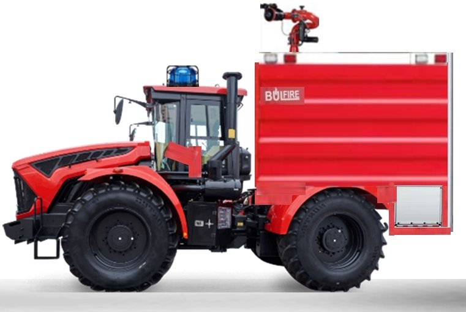
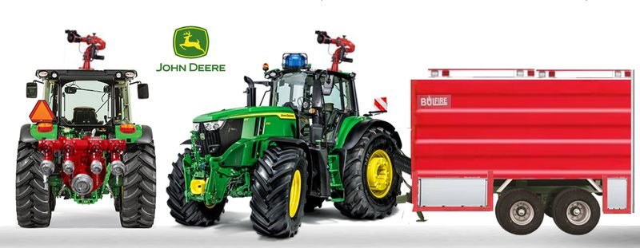
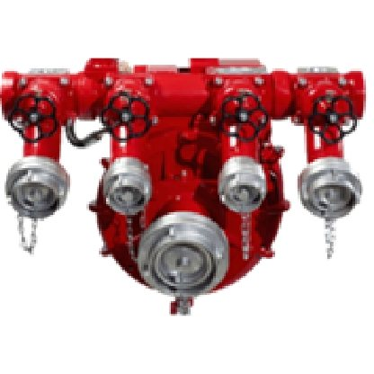
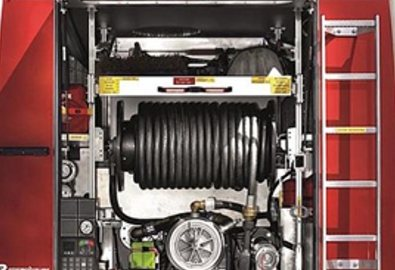
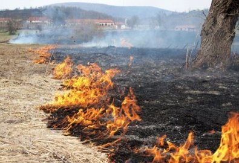
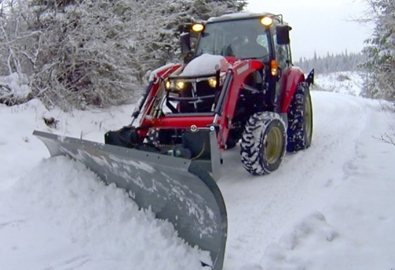
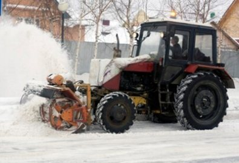
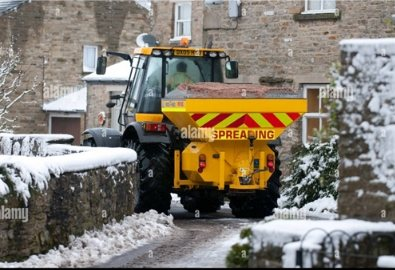
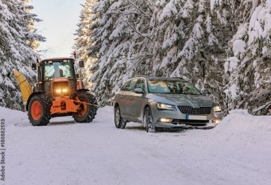
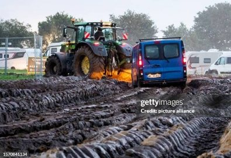

Off-road fire fighting tractors
Get a quoteUndoubtedly, off-road fire trucks are the main means of water supply and extinguishing forest fires. However, their activity can be significantly supported by the innovative product designed and manufactured by BULFIRE Ltd – FIRE TRACTOR. This fire tractor has several technical and operational qualities that fire trucks do not have. The combined work of fire trucks and fire tractors provides the best option for successfully firefighting large and complex forest fires.
The fire tractors are built on specially selected strong chassis. There are two types of fire tractors – light and heavy. Light fire tractors are available without a trailer and with a trailer.
Heavy fire tractors can be used without a trailer or with a trailer. When working with a trailer, a significant water resource is provided for extinguishing forest and field fires.
The engines of the light and heavy tractors drive the fire pumps through specially designed and manufactured mechanical transmissions.
Light fire tractors
Light fire tractors without trailer
Light fire tractors operating without trailers are built on tractor chassis specially designed and manufactured to work as forestry tractors. The tractor base chassis is manufactured in EU/Europe with a Perkins, Caterpillar, John Deere, or D-XXX engine.


Light fire tractors operating without trailers are built on tractor chassis specially designed and manufactured to work as forestry tractors. The power of light fire tractors for work without a trailer is 90 hp – 130 hp. They carry 3,000 L – 4,000 L of water and have fire pumps with a flow rate of 800 L/min – 1,600 L/min.
Tanks on light fire tractors are manufactured from high-density polyethylene or stainless steel. They can easily be dismantled so that the tractor can be used for other purposes when it is not the season of forest fires – for clearing snow, floods, and other emergencies.
Light fire tractors with trailer
Light fire tractors working with trailers are built on a tractor chassis specially designed and manufactured to work as forestry tractors. Tractor trailers are robust and designed for work in off-road terrain. The power of light fire tractors for work without a trailer is 150 hp – 220 hp. They carry 10,000 L or 15,000 L of water and have fire pumps with a flow rate of 2400 L/min.

Tractor fire trailers are easily detached from the tractor so that the tractor can be used for other purposes when it is not the forest fire season – for clearing snow, floods, and other emergencies.
Heavy fire tractors
Heavy fire tractors are specially designed and manufactured to work as forest tractors. Their construction is extremely strong and adapted to the specific forest conditions. The tractor’s base chassis is manufactured in the EU/Europe with engine Perkins, Cummins, John Deere, or YAMZ.
Heavy fire tractors can fight fires independently without a trailer or with a trailer.
Heavy fire tractors without trailer
Heavy fire tractors operating without trailers are built on tractor chassis specially designed and manufactured to work as forestry tractors. The power of Heavy fire tractors for work without a trailer is 170 hp – 300 hp with wheel configuration 4×4 or 6×6. They carry 5,000 L – 16.000 L of water and have fire pumps with a flow rate of 2.400 L/min.



Heavy fire tractors with trailer
Heavy fire tractors working with trailers are built on a tractor chassis specially designed and manufactured to work as forestry tractors. Tractor trailers are robust and designed for work in off-road terrain. The power of heavy fire tractors for work without a trailer is 250 hp – 300 hp. They carry 20.000 L of water and have fire pumps with a flow rate of 2400 L/min. The total amount of water carried by the fire tractor and the fire trailer is 25.000 L. This amount of water and the high power and maneuverability of the heavy fire tractor ensure the successful extinguishing of large and complex forest fires.


Fire tractors with high cross-country ability and functionality that significantly exceed the capabilities of fire trucks when extinguishing forest fires are built on these basic chassis. The specific design of the fire tractors is created according to the customer’s requirements for the type and volume of extinguishing agents, operational characteristics, additional equipment, and protective means.
Each fire tractor is mounted with a modern fire pump for normal pressure of up to 12 bar or normal and high pressure of up to 12 bar and 40 bar. As an option, a monitor with manual or electric control from the driver’s cabin can be installed.




When the municipality does not own specialized fire trucks and trailers, fire tractors can be used to fight large forest fires together with the available fire trucks for fighting urban fires. This can be a very effective and inexpensive wildfire-fighting option for fire departments that do not have the budget to purchase large off-road fire trucks and trailers.
What are the operational possibilities and advantages of fire tractors?
- The fire tractors used for extinguishing forest fires are compact, have a 4×4 wheel configuration, and have a high ground clearance of 450 mm – 650 mm. No off-road fire truck has such a high clearance.
- Fire tractors have a short wheelbase of 2,500 mm – 3,000 mm and very high angles of possibility (Approach angle, Ramp angle, Departure angle) about 40 degrees, which makes them machines with extremely high possibility. No off-road fire truck has such parameters of the wheelbase and angles of passage.
- Fire tractors have a very small minimum turning radius of 5 m – 6,5 m. No off-road fire truck has such a small turning radius in rugged terrain. The small turning radius makes the fire tractors very manoeuvrable when facing obstacles or individual trees when fighting forest fires.
- The transport speed of fire tractors is 30 km/h – 40 km/h. The minimum operating speed of the fire tractor is 9 km/h – 1.8 km/h. This low minimum operating speed allows the tractor to continuously move at the speed at which firefighters move during the extinguishing process. This is a big advantage because it reduces the amount of hose lines firefighters have to use. No off-road fire truck has such a low minimum operating speed. This makes it necessary, when extinguishing forest fires, for the trucks to move in sections, which increases the number of hose lines with which the firefighters work, or to move in semi-coupler mode, which is unacceptable for a full-day mode of operation.
- Fire tractors are used to extinguish forest fires with or without trailers. They carry with them a 100 L – 500 L foaming agent and 000 L – 25.000 L of water. These quantities of water are often more than the quantities of water carried by some fire trucks.
- The fire tractors are equipped with modern fire centrifugal pumps which are also used for fire trucks with a flow rate of 800 L/min, 1,600 L/min, and 2,400 – 6,000 L/min. normal pressure up to 12 bar or normal and high pressure up to 12 bar and 40 bar.
- The fire pumps of the fire tractors are equipped with vacuum pumps that allow the suction of water from a reservoir or the use of the tractor for drainage of buildings in case of floods.
- The fire tractor can supply water for water supply to other fire trucks and fire tractors or independently extinguish a fire on the spot or while moving.
- Fire tractors can also be equipped with metal frames for protection against overturning and rakes to make emergency routes for moving fire trucks and other fire equipment.
- Fire tractors can be equipped optionally with mobile pumps that work with high pressure (100 bar – 200 bar). However, these pumps are only effective for extinguishing low vegetation (dry grass) or for finishing extinguishing already localized fires. The low flow rate and highly dispersed jet from these pumps make them ineffective in extinguishing fires that have developed at a great height and covered whole trees. In this case, their small flow rate and highly dispersed jet cannot reach the fire because conventional flows entrain and evaporate the water before it reaches the place of combustion. Another inconvenience of the pumps working with high pressure is the small length of the hose lines – only 30 m – 60 m. In case of fires that have developed at a great height and covered whole trees, the fire tractor provides effective powerful compressed, and dispersed jets up to 10 – 12 bar and a length of hose lines up to 800 m.
The pictures below clearly show the difference between low dry grass fires and developed fires with high flames covering whole trees.


The information above clearly shows that the use of fire tractors has a high expediency and efficiency in extinguishing forest fires. Fire tractors will replace the use of normal fire trucks for extinguishing fires in cities from breakages and damages when using them in the forests
What else can Light fire tractors be used for?
The water tanks and converter of Light fire tractors are made of stainless steel or high-density polyethylene and can be easily dismantled. Dismantling the water tanks and converter in seasons when there are no forest fires allows the fire tractor to be used for other emergency and rescue purposes, such as:
Clearing snow off roads with a shovel or rotary snowblower.


Spreading salt and sand on the road and towing stuck cars.


Towing cars and trucks stuck in the mud.


Drainage of buildings during floods.


What else can Heavy fire tractors be used for?
The water and foam tanks cannot be removed from the heavy fire tractors, but in this form, they can perform all emergency rescue functions much more effectively than the light fire tractors shown above. The heavy fire tractors’ basic chassis can be successfully used for other purposes in hard-to-reach off-road terrains such as forests, swamps, deserts, jungles, deep snow, or other terrains where normal or off-road vehicles cannot operate.
In practice, the Fire tractor is a universal multifunctional machine that can successfully extinguish forest and field fires. Depending on the specifics and size of the forest and field terrains, the combination of 2 – 4 fire tractors with trailers carrying 10.000 L – 15.000 L or 25.000 L of water and a total volume of water up to 120.000 L water within a municipality. This can be one of the most effective and cheapest options for significantly increasing the fire service’s operational capabilities when extinguishing forest and field fires and liquidating the consequences of other emergencies.
Despite the higher technical parameters and higher operational capabilities of the off-road Light fire tractors and the fire trailers for extinguishing forest fires, their price is 2 – 3 times (200% – 300%) lower than the price of an off-road fire truck. The price of the off-road Heavy fire tractors and fire trailers is lower than the price of an off-road fire truck carrying a similar amount of water. This significant difference in prices enables municipalities with a lower budget to equip their fire departments with fire tractors and trailers that can be used efficiently to extinguish large and complex forest fires, floods, or other emergencies.